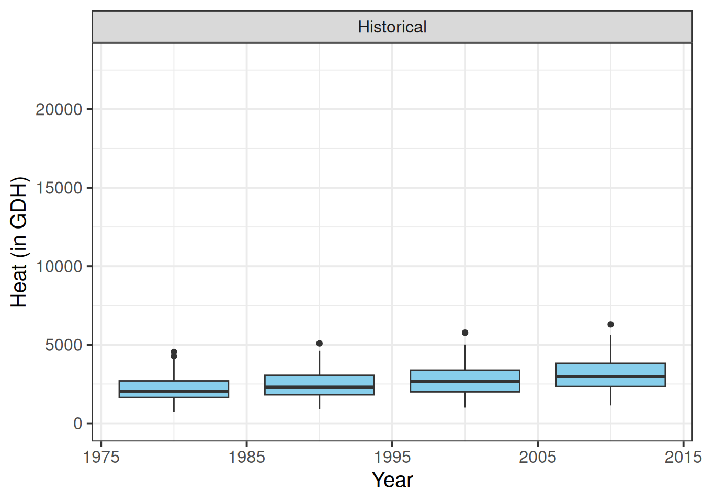
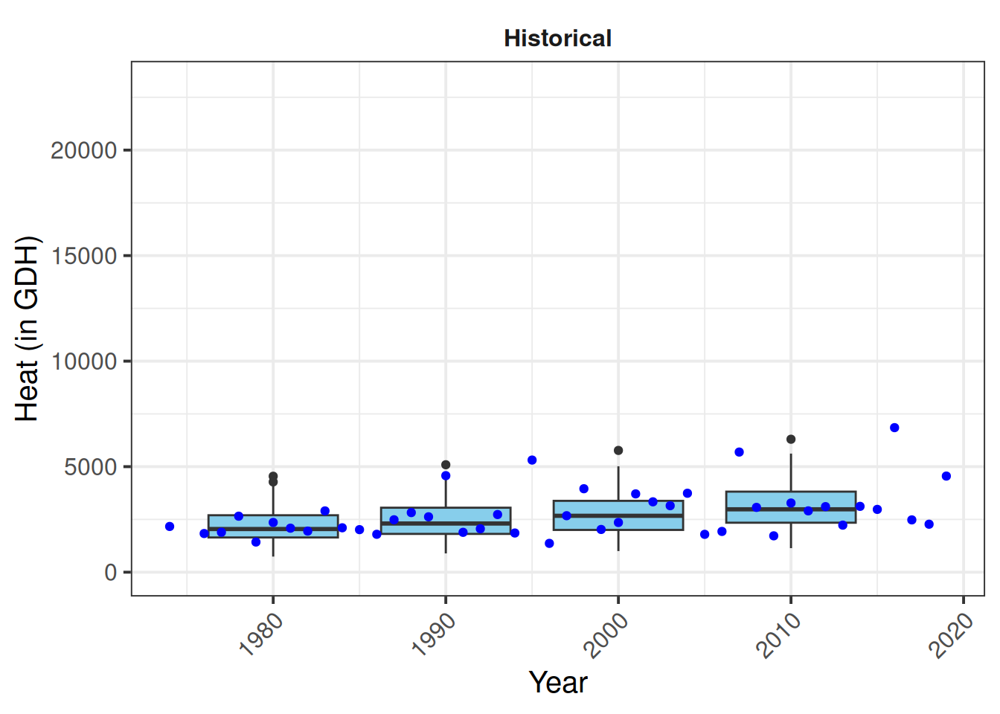
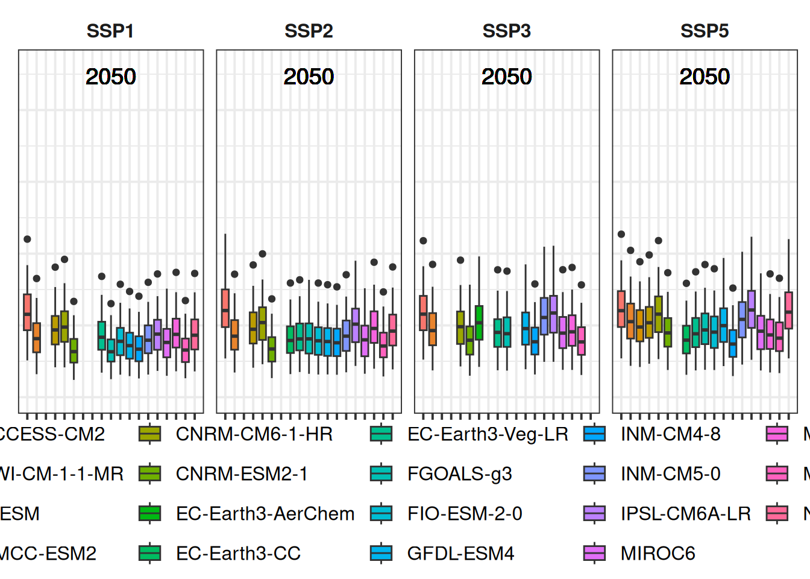
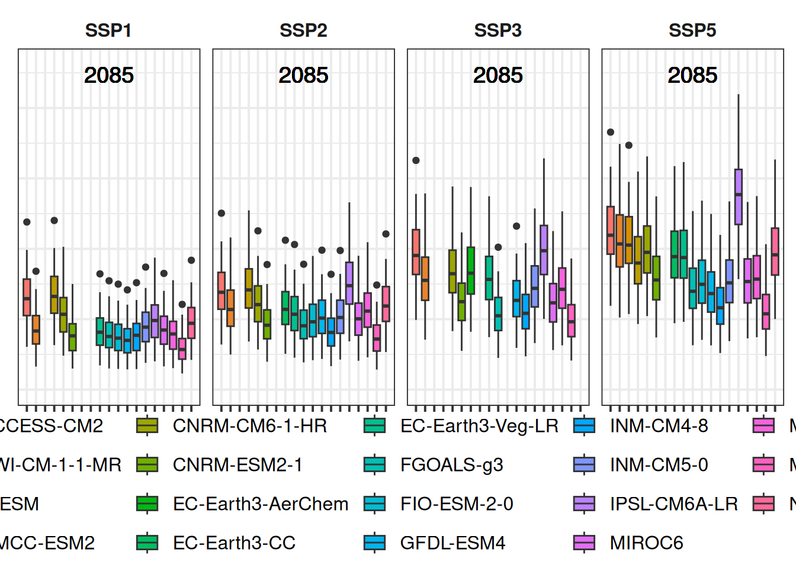
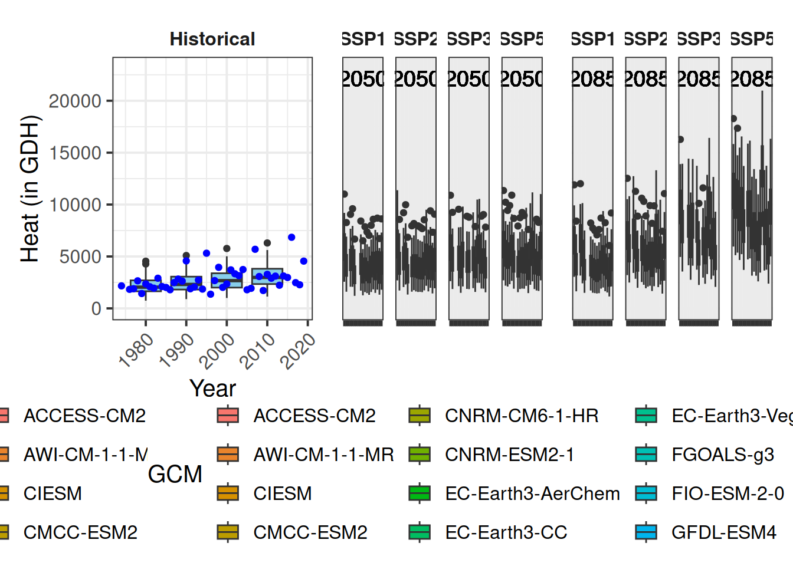
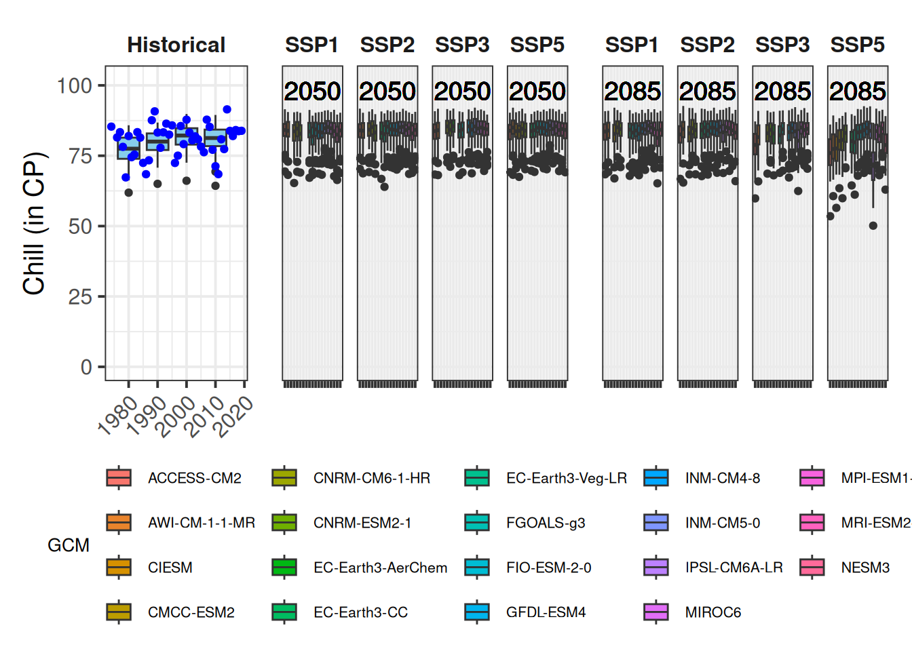
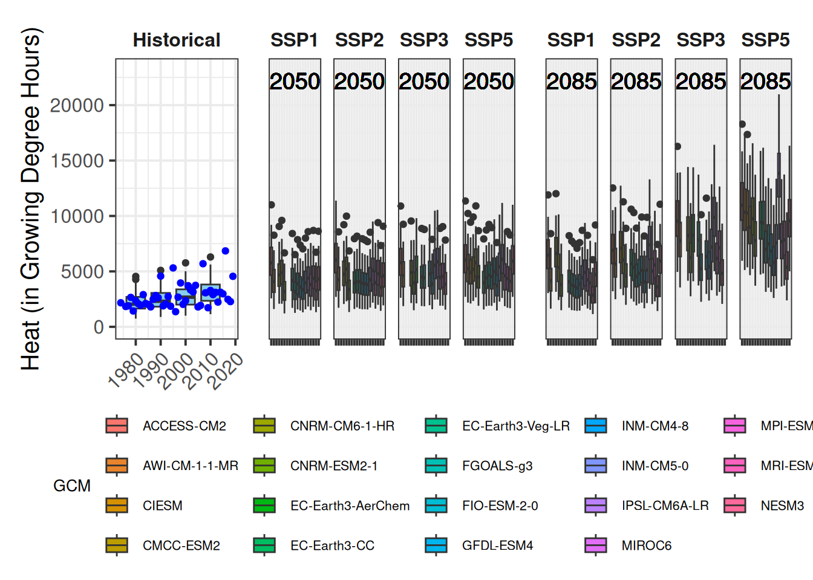
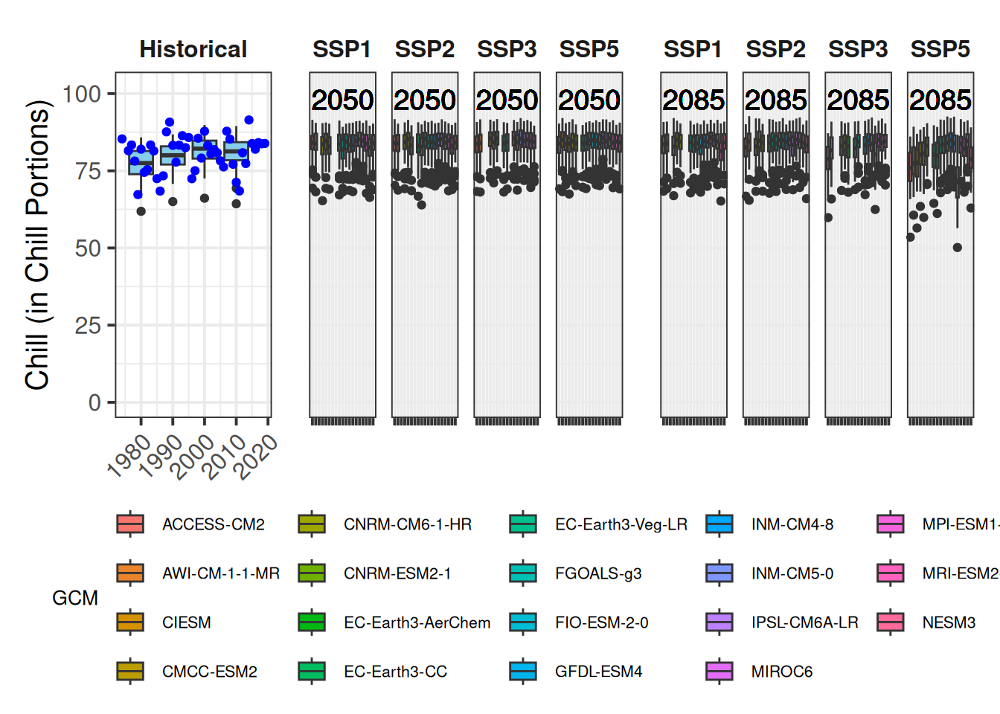

Chapter 18 Plotting future scenarios
Learning goals for this lesson
- Learn how we can use the
ggplot2package to make an appealing illustrations of the chill projection results
18.1 Making attractive plots
The default function in chillR can produce plots of the output of climate impact projections, but you may not like their design. With the current version of the plot_climate_scenarios function, there’s not much you can do to change the appearance of the plot. This is mainly because this function was written a while ago, before I became familiar with the ggplot2 functions. Today we want to try and reproduce a similar figure using ggplot.
In fact, Eduardo Fernandez has already produced a function for this, which is included in chillR. We’ll still build this up gradually in this chapter because this provides a nice opportunity for demonstrating how we can build up complex plots using ggplot. I’ve Eduardo’s code a bit to make this easier to follow, but the basic ideas are from him.
Let’s first (install and) load all needed packages. New ones we’re using here are ggpmisc and patchwork.
We’ll be building on our previous work, so we’ll have to load the outputs we produced in chapters Historic temperature scenarios and Making CMIP6 scenarios now.
library(chillR)
library(tidyverse)
library(ggpmisc)
library(patchwork)
chill_hist_scenario_list <- load_temperature_scenarios("data",
"Bonn_hist_chill_305_59")
actual_chill <- read_tab("data/Bonn_observed_chill_305_59.csv")
chill_future_scenario_list <- load_temperature_scenarios("data/future_climate","Bonn_futurechill_305_59")
chills <- make_climate_scenario(
chill_hist_scenario_list,
caption = "Historic",
historic_data = actual_chill,
time_series = TRUE)
SSPs <- c("ssp126", "ssp245", "ssp585")
Times <- c(2050, 2085)
list_ssp <-
strsplit(names(chill_future_scenario_list), '\\.') %>%
map(2) %>%
unlist()
list_gcm <-
strsplit(names(chill_future_scenario_list), '\\.') %>%
map(3) %>%
unlist()
list_time <-
strsplit(names(chill_future_scenario_list), '\\.') %>%
map(4) %>%
unlist()
for(SSP in SSPs)
for(Time in Times)
{
# find all scenarios for the ssp and time
chill <- chill_future_scenario_list[list_ssp == SSP & list_time == Time]
names(chill) <- list_gcm[list_ssp == SSP & list_time == Time]
if(SSP == "ssp126") SSPcaption <- "SSP1"
if(SSP == "ssp245") SSPcaption <- "SSP2"
if(SSP == "ssp585") SSPcaption <- "SSP5"
if(Time == "2050") Time_caption <- "2050"
if(Time == "2085") Time_caption <- "2085"
chills <- chill %>%
make_climate_scenario(
caption = c(SSPcaption,
Time_caption),
add_to = chills)
}As you may know by now, ggplot works best with all data arranged in a single data.frame rather than the kind of list we’ve stored our projection data in. Each row of this data.frame should contain information about the GCM, the SSP and the Year. This is most easily done by looping through the elements of our chill projection list, extracting the needed information and assembling it in a new, long data.frame.
# We'll first process the past scenarios (element 1 of the chills list).
# Within the data element, we have a list of multiple data.frames for
# the various past scenarios.
# Using a 'for' loop, we cycle through all these data.frames.
for(nam in names(chills[[1]]$data))
{
# Extract the data frame.
ch <- chills[[1]]$data[[nam]]
# Add columns for the new information we have to add and fill them.
ch[,"GCM"] <- "none"
ch[,"SSP"] <- "none"
ch[,"Year"] <- as.numeric(nam)
# Now check if this is the first time we've gone through this loop.
# If this is the first time, the ch data.frame becomes the output
# object (past_simulated).
# If it is not the first time ('else'), we add the current data.frame
# to the 'past_simulated' object
if(nam == names(chills[[1]]$data)[1])
past_simulated <- ch else
past_simulated <- rbind(past_simulated,
ch)
}
# We add another column called 'Scenario' and label all rows as 'Historic'
past_simulated["Scenario"] <- "Historic"
kable(head(past_simulated)) %>%
kable_styling("striped", position = "left",font_size = 8)| Season | End_year | Season_days | Data_days | Perc_complete | Chill_Portions | GDH | Frost_H | GCM | SSP | Year | Scenario |
|---|---|---|---|---|---|---|---|---|---|---|---|
| 2001/2002 | 2002 | 120 | 120 | 100 | 83.24774 | 3092.197 | 724 | none | none | 1980 | Historic |
| 2002/2003 | 2003 | 120 | 120 | 100 | 78.11408 | 2625.598 | 747 | none | none | 1980 | Historic |
| 2003/2004 | 2004 | 120 | 120 | 100 | 76.80742 | 1157.748 | 1039 | none | none | 1980 | Historic |
| 2004/2005 | 2005 | 121 | 121 | 100 | 83.04621 | 1722.581 | 735 | none | none | 1980 | Historic |
| 2005/2006 | 2006 | 120 | 120 | 100 | 85.16369 | 2679.577 | 547 | none | none | 1980 | Historic |
| 2006/2007 | 2007 | 120 | 120 | 100 | 80.75687 | 2277.176 | 725 | none | none | 1980 | Historic |
# We'll want to add the historic observation too, so let's simplify the
# pointer to this information for easier use later
past_observed <- chills[[1]][["historic_data"]]| Season | End_year | Season_days | Data_days | Interpolated_days | Perc_complete | Chill_Portions | GDH | Frost_H |
|---|---|---|---|---|---|---|---|---|
| 1973/1974 | 1974 | 120 | 120 | 0 | 100 | 85.34065 | 2166.376 | 498 |
| 1975/1976 | 1976 | 120 | 120 | 0 | 100 | 81.50011 | 1831.580 | 711 |
| 1976/1977 | 1977 | 121 | 121 | 0 | 100 | 83.37374 | 1892.026 | 741 |
| 1977/1978 | 1978 | 120 | 120 | 0 | 100 | 78.15125 | 2653.059 | 830 |
| 1978/1979 | 1979 | 120 | 120 | 0 | 100 | 67.29434 | 1428.630 | 1376 |
| 1979/1980 | 1980 | 120 | 120 | 0 | 100 | 82.00353 | 2356.143 | 702 |
Now we do the same thing for the future data:
# Extract future data
for(i in 2:length(chills))
for(nam in names(chills[[i]]$data))
{ch <- chills[[i]]$data[[nam]]
ch[,"GCM"] <- nam
ch[,"SSP"] <- chills[[i]]$caption[1]
ch[,"Year"] <- chills[[i]]$caption[2]
if(i == 2 & nam == names(chills[[i]]$data)[1])
future_data <- ch else
future_data <- rbind(future_data,ch)
}| Season | End_year | Season_days | Data_days | Perc_complete | Chill_Portions | GDH | Frost_H | GCM | SSP | Year |
|---|---|---|---|---|---|---|---|---|---|---|
| 2001/2002 | 2002 | 120 | 120 | 100 | 81.17965 | 8621.666 | 244 | ACCESS-CM2 | SSP1 | 2050 |
| 2002/2003 | 2003 | 120 | 120 | 100 | 83.99946 | 7445.087 | 301 | ACCESS-CM2 | SSP1 | 2050 |
| 2003/2004 | 2004 | 120 | 120 | 100 | 87.47715 | 4509.095 | 417 | ACCESS-CM2 | SSP1 | 2050 |
| 2004/2005 | 2005 | 121 | 121 | 100 | 88.96616 | 5731.699 | 168 | ACCESS-CM2 | SSP1 | 2050 |
| 2005/2006 | 2006 | 120 | 120 | 100 | 86.26209 | 8125.272 | 67 | ACCESS-CM2 | SSP1 | 2050 |
| 2006/2007 | 2007 | 120 | 120 | 100 | 84.99106 | 6662.973 | 304 | ACCESS-CM2 | SSP1 | 2050 |
Now our data are in a format that ggplot should be able to work with. We have three metrics in our dataset: Chill_Portions, GDH and Frost_H. We’re not going to write an actual function now (though we probably should), but the code should be flexible enough to allow plotting all three metrics without major adjustments. So I’m defining a variable metric, and a variable axis_label that we can easily adjust later.
The complex plot we’re going to produce is difficult (or even impossible) to make as a single ggplot plot, but this is no problem, because we can assemble multiple plots into a compound figure later. Here we’ll do this with the plot_layout function of the patchwork package. One problem that arises when we combine figures from multiple plots and we want to use common axes (the y-axis in this case) is that these axes may not be similar. The data in the various plots may span different ranges, so that the automatic selection of reasonable axis settings may lead to different results. Here, we’ll use the range function to identify reasonable axis extents that work across all plots.
metric <- "GDH"
axis_label <- "Heat (in GDH)"
# get extreme values for the axis scale
rng <- range(past_observed[[metric]],
past_simulated[[metric]],
future_data[[metric]])
rng## [1] 739.4306 26039.0479Now we’re ready for our first plot. We’ll start with the past scenarios:
past_plot <- ggplot() +
geom_boxplot(data = past_simulated,
aes_string("as.numeric(Year)",
metric,group="Year"),
fill = "skyblue")## Warning: `aes_string()` was deprecated in ggplot2 3.0.0.
## ℹ Please use tidy evaluation idioms with `aes()`.
## ℹ See also `vignette("ggplot2-in-packages")` for more information.
## This warning is displayed once every 8 hours.
## Call `lifecycle::last_lifecycle_warnings()` to see where this warning was
## generated.The general layout of this command should be familiar to you by now, but there’s one little detail I had to change here. You’ll have noticed that in many places in ggplot commands, we can simply write the names of the variables we want to use (as in group=Year). This is a bit unusual, because normally in R we have to place such strings in quotation marks. Otherwise, R thinks these are variable names and - if no such variable is defined - we get an error message. I don’t know how the designers of ggplot2, led by Hadley Wickham, a hero of the R community, managed to make this requirement go away here, but it sure makes life easier - until you’re trying to use actual variable names in a ggplot2 call. Then we’d actually like to have the distinction between strings and variable names back. Well, we can get it back by using the aes_string command instead of aes, as you can see in the call above.
As I said earlier, we need to make sure that the y-axis can accommodate not only the data in this plot, but also all future scenarios. We can use the rng range we produced before. I’ll also adjust the axis labels (including for the y axis the customized axis_label we made above):
past_plot <- past_plot +
scale_y_continuous(
limits = c(0,
round(rng[2] + rng[2]/10))) +
labs(x = "Year",
y = axis_label)
past_plotNow we already have a fine plot of the past scenarios, but to make sure it is formatted in a similar way as the future data, we still need some adjustments. Here we only have one plot, but for the future scenarios, we’ll produce multiple plots, once again using the facet_wrap function. This will automatically add some design elements to our plot. To ensure we have a consistent layout for the whole figure, we therefore also make this single plot into a facet. We’ll also choose our black and white theme again:

Finally, some finishing touches, related to the facet title (make background disappear and text bold) and the x-axis text (place at an angle, so that all year labels can be displayed properly, even when we change the text size).
past_plot <- past_plot +
theme(strip.background = element_blank(),
strip.text = element_text(face = "bold"),
axis.text.x = element_text(angle=45,
hjust=1))
past_plotThis is our plot of past scenarios. Now let’s add the actual observations. I’ll make them blue, so that they can be distinguished from the outliers in the box_plots. That one is fairly straightforward:
# add historic data
past_plot <- past_plot +
geom_point(data = past_observed,
aes_string("End_year",
metric),
col = "blue")
past_plot
Now we have what we needed for the past. The plots for the future an be produced in a largely similar way. To organize things properly, we’ll produce one plot for the two scenarios for 2050 first, and then another one for 2085. Then we can display them as two groups of two plots each. I’ll save these two plots in a list. This wouldn’t really be necessary here, but such a structure would allow us to later add more scenarios, should that seem desirable. Before making the plots in such a list structure, let’s first see one being assembled. We’ll start with the year (y) 2050
y <- 2050
future_2050 <- ggplot(data= future_data[which(future_data$Year==y),]) +
geom_boxplot(aes_string("GCM",
metric,
fill = "GCM"))
future_2050
So far, we have all SSPs mixed together here. We also can’t read anything on the y-axis. That’s no big deal, because the same information is contained in the color scheme, but it sure looks ugly. We’ll also add a bit of padding on the side of the plots (with the expand parameter), to ensure that the plot doesn’t look too crowded:
future_2050 <- future_2050 +
facet_wrap(vars(SSP)) +
scale_x_discrete(labels = NULL,
expand = expansion(add = 1)) Also here, we need to adjust the axis limits, so that the future plots can use the same axis as the past plots. I’ll also add the scenario year to the plots. For this, I’m using the geom_text_npc function from the ggpmisc package:
future_2050 <- future_2050 +
scale_y_continuous(limits = c(0,
round(round(1.1*rng[2])))) +
geom_text_npc(aes(npcx = "center",
npcy = "top",
label = Year),
size = 5)
future_2050Finally, some cosmetics: we again choose the black and white theme, and we’ll remove all axis text and titles (they don’t add much, and they make the figure look crowded). We’ll also remove the y-axis ticks. We then want the legend at the bottom and format the facet title the same way as for the past plot.
future_2050 <- future_2050 +
theme_bw(base_size = 15) +
theme(axis.ticks.y = element_blank(),
axis.text = element_blank(),
axis.title = element_blank(),
legend.position = "bottom",
legend.margin = margin(0,
0,
0,
0,
"cm"),
legend.background = element_rect(),
strip.background = element_blank(),
strip.text = element_text(face = "bold"),
legend.box.spacing = unit(0, "cm"),
plot.subtitle = element_text(hjust = 0.5,
vjust = -1,
size = 15 * 1.05,
face = "bold"))
future_2050
The legend is still too large, but we’ll adjust that later.
Now let’s implement the same procedure in a loop, where we make a list of two plots - one for 2050 and one for 2085:
future_plot_list <- list()
for(y in c(2050,
2085))
{
future_plot_list[[which(y == c(2050,
2085))]] <-
ggplot(data = future_data[which(future_data$Year==y),]) +
geom_boxplot(aes_string("GCM",
metric,
fill="GCM")) +
facet_wrap(vars(SSP)) +
scale_x_discrete(labels = NULL,
expand = expansion(add = 1)) +
scale_y_continuous(limits = c(0,
round(round(1.1*rng[2])))) +
geom_text_npc(aes(npcx = "center",
npcy = "top",
label = Year),
size = 5) +
theme_bw(base_size = 15) +
theme(axis.ticks.y = element_blank(),
axis.text = element_blank(),
axis.title = element_blank(),
legend.position = "bottom",
legend.margin = margin(0,
0,
0,
0,
"cm"),
legend.background = element_rect(),
strip.background = element_blank(),
strip.text = element_text(face = "bold"),
legend.box.spacing = unit(0, "cm"),
plot.subtitle = element_text(
hjust = 0.5,
vjust = -1,
size = 15 * 1.05,
face = "bold"))
}
future_plot_list## [[1]]
##
## [[2]]
Putting the plots together now is surprisingly easy. We just use the + sign.

All the basics are there, but we need a few adjustments, mainly to the legend. For this, we use the plot_layout function of the patchwork package. This supports the production of such patchwork figures, e.g. by collecting all legends and removing duplicates. This is handy, because we only want one version of the legend drawn. We can also specify the width of the various plots. I’m making a vector c(1,1.8,1.8) (using a slightly more flexible formulation) to specify that the width of each set of future plots should be 1.8 times the width of the past scenario plot.
plot <- both_plots +
plot_layout(guides = "collect",
widths = c(1,rep(1.8,length(future_plot_list))))Now we can’t really see the plot any more, so let’s place the legend at the bottom. For some reason that probably has to do with the patchwork package, we have to add the corresponding theme call after an & symbol.
plot <- plot & theme(legend.position = "bottom",
legend.text = element_text(size=8),
legend.title = element_text(size=10),
axis.title.x = element_blank())After doing this we get…
18.2 The results
Now we have some fairly nice ggplot figures showing a heat analysis for Bonn:
That’s it. Now we can try the same thing again for the other metrics. If we did everything right, we should be able to do this by just changing the metric and axis_label variables and running the whole code again. I’ll do that now, but I won’t show you the whole code:


Finally, a quick demonstration about functions. If we wanted to make a generally applicable function that does all the processing we just set up, we’d still have to put a bit of effort in. We’d have to make sure that the function produces warnings or errors when it’s fed with inappropriate inputs, and we’d really have to ensure that it’s flexible enough to deal with various types of inputs. But let’s assume we only want to use it with data that has the same structure as what we’ve used so far. Then we can just take all the commands so far and wrap them in a function call:
plot_scenarios_gg <- function(past_observed,
past_simulated,
future_data,
metric,
axis_label)
{
rng <- range(past_observed[[metric]],
past_simulated[[metric]],
future_data[[metric]])
past_plot <- ggplot() +
geom_boxplot(data = past_simulated,
aes_string("as.numeric(Year)",
metric,
group="Year"),
fill="skyblue") +
scale_y_continuous(limits = c(0,
round(round(1.1*rng[2])))) +
labs(x = "Year", y = axis_label) +
facet_grid(~ Scenario) +
theme_bw(base_size = 15) +
theme(strip.background = element_blank(),
strip.text = element_text(face = "bold"),
axis.text.x = element_text(angle=45,
hjust=1)) +
geom_point(data = past_observed,
aes_string("End_year",
metric),
col="blue")
future_plot_list <- list()
for(y in c(2050,
2085))
{
future_plot_list[[which(y == c(2050,2085))]] <-
ggplot(data = future_data[which(future_data$Year==y),]) +
geom_boxplot(aes_string("GCM",
metric,
fill="GCM")) +
facet_wrap(vars(SSP)) +
scale_x_discrete(labels = NULL,
expand = expansion(add = 1)) +
scale_y_continuous(limits = c(0,
round(round(1.1*rng[2])))) +
geom_text_npc(aes(npcx = "center",
npcy = "top",
label = Year),
size = 5) +
theme_bw(base_size = 15) +
theme(axis.ticks.y = element_blank(),
axis.text = element_blank(),
axis.title = element_blank(),
legend.position = "bottom",
legend.margin = margin(0,
0,
0,
0,
"cm"),
legend.background = element_rect(),
strip.background = element_blank(),
strip.text = element_text(face = "bold"),
legend.box.spacing = unit(0, "cm"),
plot.subtitle = element_text(hjust = 0.5,
vjust = -1,
size = 15 * 1.05,
face = "bold"))
}
plot <- (past_plot +
future_plot_list +
plot_layout(guides = "collect",
widths = c(1,rep(1.8,length(future_plot_list))))
) & theme(legend.position = "bottom",
legend.text = element_text(size = 8),
legend.title = element_text(size = 10),
axis.title.x=element_blank())
plot
}Now we can produce the same outputs a bit more quickly:
plot_scenarios_gg(past_observed=past_observed,
past_simulated=past_simulated,
future_data=future_data,
metric="GDH",
axis_label="Heat (in Growing Degree Hours)")
plot_scenarios_gg(past_observed=past_observed,
past_simulated=past_simulated,
future_data=future_data,
metric="Chill_Portions",
axis_label="Chill (in Chill Portions)")